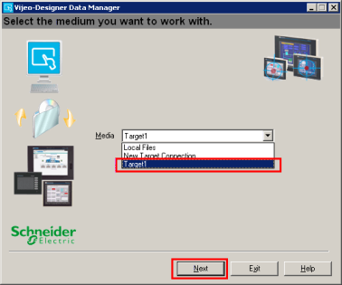
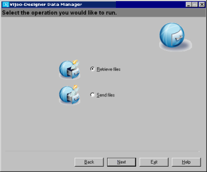
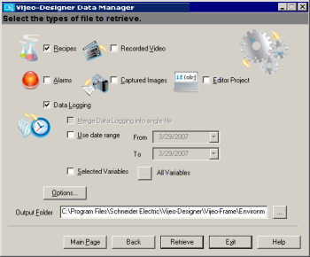

|
|
|
|
|
|
|
|
Data Manager can retrieve the following data files from a target machine:
Data Logging files (.dat). Data Logging files are records of changes in variable values. For more information on Data Logging files (.dat), see Section 13.1, About Data Logging.
Recipe files (.rcp). Recipe files are collections of variables and values. For more information on Recipe files (.rcp), see Section 17.3.2, Setting Up the Recipes Node.
Alarm files (.csv). Alarm files are records of alarms occurring in the target machine. For more information on Alarm files, (.csv), see Section 16.3.6, Outputting Alarms and Events to a .CSV File.
Video files (.vmg). Video files are video recordings. For more information about video files, see Section 19.1.1, About Video.
Snapshot files (jpeg). Snapshot files are either image captures of the target machine during run time or image captures of the Video Display during run time. For more information on Screen Snapshots, see Section 19.2.1 Saving Screen Snapshots. For more information on Video Snapshots, see Section 19.1.6.2 Saving Video Snapshots.
Editor Project files (.vdz). Editor Project files are backup files of the target machine's project. The backup file contains the project file and the data files associated with the project, such as sound files, image files, and text files. For more information on Editor Project files (.vdz), see Section 21.5.2, Backing up Projects to Main Drive, CF Card/SD Card, or USB Drive.
Start Data Manager.
In the Windows Start menu, point to Programs, Schneider Electric, Vijeo-Designer‚ Tools, Data Manager, and click Vijeo-Designer Data Manager.
On the main page, use the Media drop-down list to select the target machine to connect to and then click Next.
If you want to create a new target to connect to, see Section 20.5.2.1, Creating a Target Connection.

Select Retrieve Files option button and click Next to connect to the target.

The Data Manager connects to the target and displays the window to retrieve files.
In the window to retrieve files, specify the file to retrieve from the target.

The table below describes the settings available.
|
Property |
Description |
|
File Types |
Select the file types to retrieve from the target.
|
|
Merge Data Logging into Single file |
Available only when Data Logging is selected. When selected, the Data Logging files (.dat) for one variable on the target are merged into a single file during conversion. This will be done for each data logged variable. This property is enabled when the Build Tree property in the Data Manager Options dialog box is disabled. This property is disabled when the Build Tree property is enabled. |
|
Use Date Range |
Available only when Data Logging is selected. This property sets the Data Manager to only retrieve the Data Logging files that were created within the specified Date Range. Specify the Date Range using the From and To fields. |
|
Selected Variables |
Available only when the Data Logging is selected. Select this property to retrieve the data files of specified variables, and click the ellipsis beside it to open the Variable List dialog box. Select specific variables. Data files are retrieved for the selected variables in the project. If you do not select this property, then all variables are selected. |
|
Options |
The Options button displays options for retrieving and converting files. See Section 20.5.2.6, Data Manager Options for Retrieving and Converting Files. |
|
Output Folder |
Specify the output folder for the retrieved files. Click the ellipsis button and use Windows Explorer to select the output folder. Alternatively, you can type the file path in the Output Folder field.
|
Click Retrieve to retrieve the data.
Once Data Manager begins retrieving the data, the Data Transfer Status window appears and shows the transfer status. For more information on the Data Transfer window, see Section 20.5.2.8, Data Transfer Status.